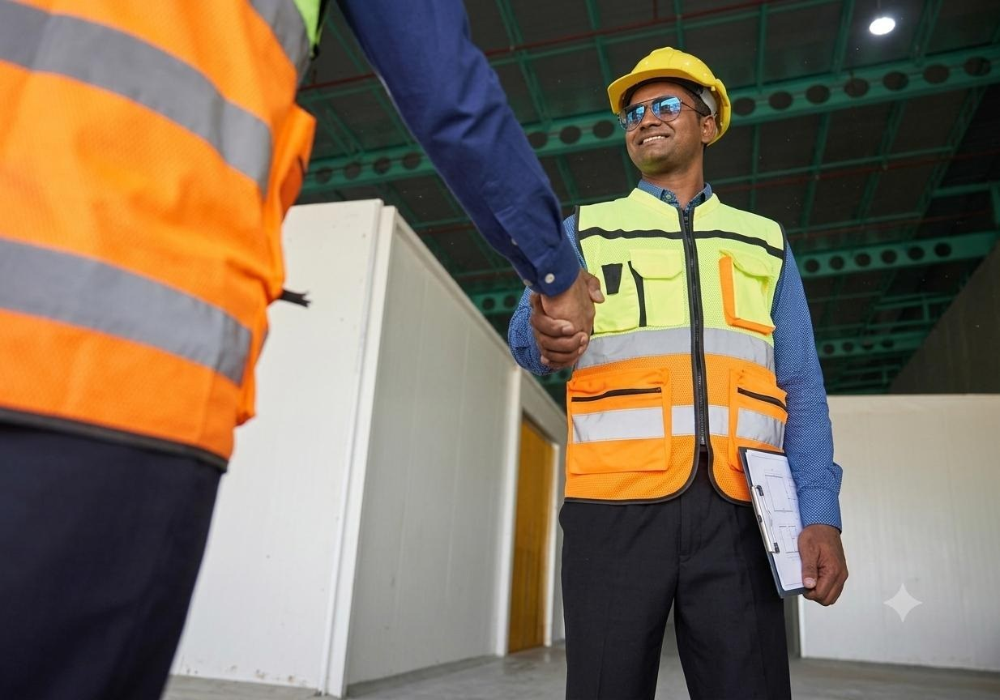

Solar EPC & Site Work
Pile foundations, module structures, support-room civil work, land levelling, RCC, PV module installation, solar lighting and cabling foundations.
Explore capability →Rudra Prime Infra LLP is a professionally managed civil infrastructure and project-execution firm covering civil construction, structural engineering, solar EPC support, foundations, road & earthwork, electrical/cabling and skilled manpower deployment.
According to the supplied company profile, Rudra Prime Infra LLP combines civil, structural and solar EPC capabilities with manpower deployment. Its stated approach centres on technical precision, strict safety standards, disciplined monitoring, transparent reporting and on-time delivery.
The supplied profiles cover a broader service mix than the earlier website. The site now surfaces those capabilities clearly.
Pile foundations, module structures, support-room civil work, land levelling, RCC, PV module installation, solar lighting and cabling foundations.
Explore capability →Building construction, deep foundations, RCC framing, finishing, boundary works and infrastructure execution.
Explore capability →Foundation boring, piling services, pile capping and related foundation work supported by dedicated equipment.
Explore capability →Grading, levelling, excavation, backfilling and access-road work using the company's stated construction fleet.
Explore capability →Cable trenching, route preparation, AC/DC panel work, control wiring and electrical fit-out support.
Explore capability →Fabrication and erection of sheds, support structures and module-mounting frames with in-house tools.
Explore capability →Foundation, civil and balance-of-plant support for wind energy project sites, as listed in the company profile.
Explore capability →Project monitoring, planning, coordination and site supervision aligned with the stated execution philosophy.
Explore capability →Engineers, supervisors, operators, electricians, welders, drivers and skilled / unskilled workforce with compliance.
Explore capability →
End-to-end civil, foundation and installation scope for utility and commercial solar sites.
The company profile describes a qualified core team of civil engineers, project coordinators and site supervisors, with commercial operations headed by a Chartered Accountant.

Listed in the supplied profile for the Sumitomo India Ltd project.

Foundation and module-structure related work documented in the track record.

Execution scope listed in the supplied company profile.
The supplied company profile states a commitment to a safe and healthy workplace, environmental protection, HSE compliance, hazard control and employee training.

Execution principles stated in the supplied profile.
The supplied deck is presented as a private-review opportunity and is kept separate from the company's completed track record.
Deck assumptions: 5 MW AC, ~6–6.5 MWp DC, 20–25 acres, 8–9 MU annual generation, ₹20–22 Cr total project cost and ₹6–7 Cr promoter equity. The deck also describes captive, group captive, open-access and long-term PPA structures.
Scope → planning → mobilisation → execution → monitoring → closeout.
Scope, drawings, site constraints and deliverables.
Resources, sequencing, equipment and manpower.
Site setup, safety controls and field readiness.
Civil, structural, electrical and installation work.
QA/QC, HSE, progress and coordination.
Handover support and project documentation.
Share your project location, scope, capacity, timeline or manpower requirement. The contact page prepares an email enquiry without storing form data on this static website.
Start a project discussion ↗